How are frames and machines different from trusses?
Why are the methods of joints and sections not appropriate for frames and machines?
How do we identify if a structure is independently rigid?
How do we apply equilibrium equations to each member of the structure, and ensure that the sense of a force appearing on multiple free-body diagrams is consistent?
Frame and machines are engineering structures that contain at least one multi-force member. As their name implies, multi-force members have more than two concentrated loads, distributed loads, and/or couples applied to them and therefore are not two-force members. Note that all bodies we investigated in Chapter 5 were all multi-force bodies.
Frames are rigid, stationary structures designed to support loads and must include at least one multi-force member.
Machines are non-rigid structures where the parts can move relative to one another. Generally, they have an input and an output force and are designed to produce a mechanical advantage. Note that all machines in this text are in static equilibrium by their interacting and applied forces.
Though there is a design difference between frames and machines they are grouped together because they can both be analyzed using the same process, which is the subject of this section.
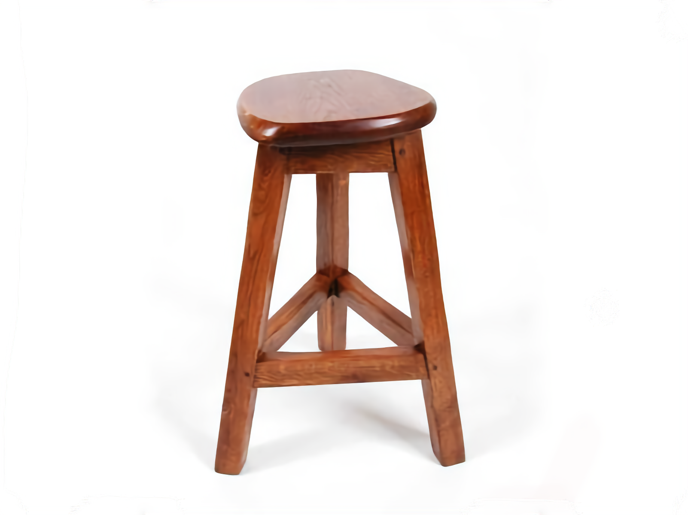Figure6.6.1.Frames are rigid objects containing multi-force members.
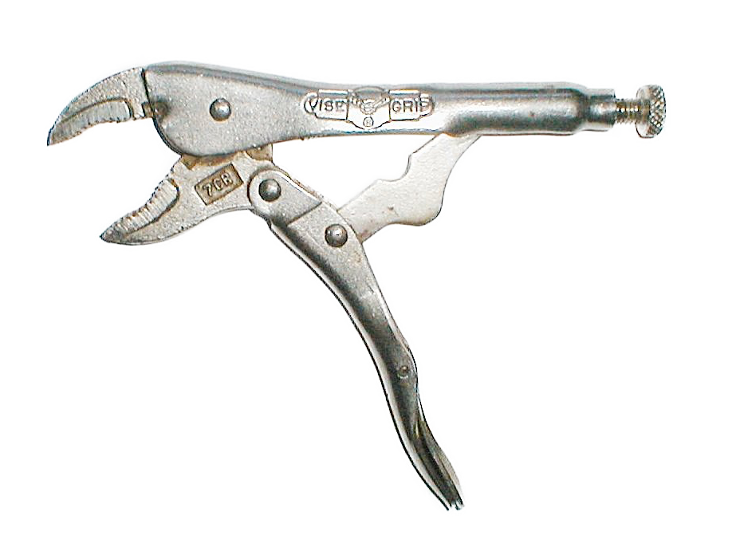Figure6.6.2.Machines contain multi-force members that can move relative to one another.
Subsection6.6.1Analyzing Frames and Machines
Analyzing a frame or machine means determining all applied, reaction, and internal forces and couples acting on the structure and all of its parts.
Multi-part structures are analyzed by mentally taking them apart and analyzing the entire structure and each part separately. Each component is analyzed as a separate rigid body using the techniques we have already seen.
Although we can separate the structure into parts, the parts are not independent since, by Newton’s Third Law, every interaction is half of a complementary pair. For every force or moment of body \(A\) on \(B\) there is an equal-and-opposite force or moment of body \(B\) on body \(A\) and the free-body diagrams must reflect this. Incorrect representation of these interacting pairs on free-body diagrams is a common source of student errors.
Once the frame or machine is disassembled and free-body diagrams have been drawn, the structure is analyzed by applying equations of equilibrium to free-body diagrams, exactly as you have done before —there’s nothing new here.
The difficulty arises first in selecting objects and drawing correct free-body diagrams and second, in identifying an efficient solution strategy since you usually won’t be able to completely solve a diagram without first finding the value of an unknown force from another diagram.
In Chapter 5 we saw that each two-dimensional free-body diagram results in up to three linearly independent equations. By disassembling the structure we create new free-body diagrams that can be used to determine more unknown values. Here are a few more details on the number of equations that come from each type of two-dimensional free-body diagram:
Two-force members.
One equation. Two-force members can be recognized as either a cable or a weightless link with all forces coming from two frictionless pins. The force at one pin is equal and opposite to the force on the other placing the body in tension or compression.
Objects with concurrent forces and no couple-moments.
Two equations. These are the problems you solved in Chapter 3. There are two equations available \(\Sigma F_x = 0\) and \(\Sigma F_y = 0\text{.}\)
Multi-force rigid body with non-concurrent forces and/or couples.
Three equations. These are the most general body types. Use \(\Sigma F_x = 0\text{,}\)\(\Sigma F_y = 0\text{,}\) and\(\Sigma M = 0\) to solve for three unknowns.
SubsubsectionProcedure
The process used to analyze frames and machines is outlined below
Determine if the entire structure is independently rigid. An independently rigid structure will hold it shape even when separated from its supports. Look for triangles formed among the members, as triangles are inherently rigid. If it is not independently rigid, the structure will collapse when the supports are removed.
If the structure is not independently rigid, skip to the next step. Otherwise, model it as a single rigid body and determine the external reaction forces.
Draw a free-body diagram for each of the members in the structure. You must represent all forces acting on each member, including:
Applied forces and couples and the weights of the components if non-negligible.
Interaction forces due to two-force members. There will be a force of unknown magnitude but the known direction at points connected to two-force members. The forces will act along the line between the two connection points.
All reaction forces and moments at the connection points between members. Forces with an unknown magnitude and direction are usually represented by unknown \(x\) and \(y\) components, but can also be represented as a force of unknown magnitude acting in an unknown direction.
All interaction forces and moments between connected bodies must be shown as equal-and-opposite action-reaction pairs.
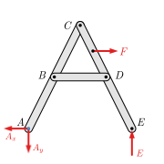Figure6.6.3.Free-body diagram of a rigid frame with pin at \(A\text{,}\) roller at \(E\text{,}\) and load at \(F\text{.}\)
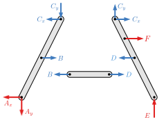Figure6.6.4.Free body diagrams of the individual components. External forces are in red, and exposed action-reaction pairs are in blue.
Write out the equilibrium equations for each free-body diagram.
Solve the equilibrium equations for the unknowns. You can do this algebraically, solving for one variable at a time, or you can use matrix equations to solve for everything at once. Negative magnitudes indicate that the assumed direction of that term was incorrect, and the actual force/moment is opposite the assumed direction.
In the following example, we’ll discuss how to select objects, distinguish external and internal loads, draw consistent and correct free-body diagrams, and identify a good solution strategy.
SubsubsectionFree-body diagram of structures
Drawing free-body diagrams of complex frames and machines can be tricky. In this section, we will walk through the process of selecting appropriate objects and drawing consistent and correct free-body diagrams to solve a typical machine problem.
The toggle clamp shown in Figure 6.6.5 is used to quickly secure wooden furniture parts to the bedplate of a CNC router in order to cut mortise and tenon joints. The component parts are shown and named in Figure 6.6.6.
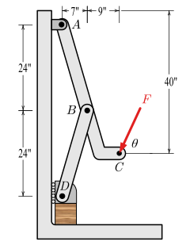Figure6.6.5.Original diagram
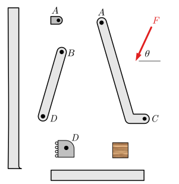Figure6.6.6.Component parts.
This original diagram is not a free-body diagram because all the forces necessary to hold the objects in equilibrium are not indicated. The only force shown is \(F,\) which is supplied by some external agent, presumably the machine operator. We must assume that the wall and floor are still attached to the world and held fixed.
To perform an equilibrium analysis, we need to develop one or more free-body diagrams and apply the equations of equilibrium to them. Free-body diagrams can be drawn for the entire structure, each individual part, and any combination of connected parts. Not all these diagrams will be needed, and part of the challenge of solving these problems is selecting and drawing only the diagrams you need. In any event, a clear decision must always be made about what is part of the free body and what is not.
When we separate one body from another loads will appear on both bodies which act to constrain them as they were constrained before the separation. These forces and moments must be represented on the free-body diagrams consistently as halves of equal-and-opposite action-reaction pairs.
For this discussion, we will progressively exclude parts from the original structure and draw the free-body diagram of what remains. In so doing we will clarify the difference between internal and external forces, recognize and take advantage of two-force bodies, and provide some tips for drawing correct free-body diagrams. In an actual situation, you will not need to draw all these diagrams, instead, you should think through the situation and draw only the diagrams you will need for a solution.
It is helpful to consider which loads are known and which are unknown as you prepare free-body diagrams. In planar problems, a free-body diagram with three or fewer unknowns may be solved immediately. When there are more than three unknowns, you must incorporate information from other diagrams to complete the solution.
Exclude the floor.
To begin, we can remove the floor from the system. Everything except the floor is now included as our body; only the floor is excluded. The floor was in contact with the wooden block and connected to the wall.
Since we don’t know how the wall and the floor are connected we will assume a rigid, fixed connection. We also have to model how the wall is attached to the rest of the world. The fixed support from wall-to-world and wall-to-floor can be combined to be a single set of three loads which we represent as horizontal and vertical forces \(V_x\) and \(V_y\text{,}\) and a concentrated moment \(M_v\text{.}\)
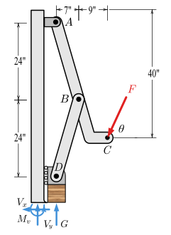
Included
Excluded
Lever \(ABC\text{,}\) Short Link \(BD\text{,}\) Wooden Block, Roller \(D\text{,}\) Wall, Bearing \(A\)
Floor
Figure6.6.7.Free-body Diagram 1
The effect of the floor on the block is represented by a single vertical force \(G\) which holds the block the same way the floor was previously supporting it; the loads you add must constrain your object the same way they were constrained in the real world. This representation is a simplification of the actual situation since the force of the floor is distributed over the bottom surface of the block; however, this simplification is justified in much the same way as we represent the weight of an object as a single force acting at its center of gravity.
Tips.
Include friction if it’s given or obvious.
Internal forces in rigid bodies should be modeled as a fixed support.
If you need info that you don’t have, select a variable to act as its name.
Exclude the wall.
If you next remove the wall, forces \(G\) and \(F\) remain from before, but we now expose four loads from where the wall was connected to what is now our body; a normal force \(N\) at the roller and three loads from the fixed support between the bearing block and the wall \(W_x\text{,}\)\(W_y\text{,}\) and \(M\text{.}\)
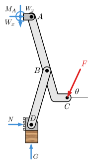
Included
Excluded
Lever \(ABC\text{,}\) Short Link \(BD\text{,}\) Wooden Block, Roller \(D\text{,}\) Bearing \(A\)
Floor, Wall
Figure6.6.8.Free-body diagram 2
Note that the reactions between the wall and the floor are no longer included in the free-body diagram because they are both on the same side of the included-excluded table. Only loads that cross from included to excluded produce a load on the free-body diagram.
Tips.
Every force needs a point of application and a clear arrowhead.
Indicate any distances and angles needed and not available on the original diagram.
Define the direction of forces that are not vertical or horizontal with an angle from a reference direction.
Define a coordinate system unless you are using the standard \(x\)-\(y\) axes.
Do not add forces that don’t act on your body.
Exclude the bearing at \(A\).
We are not interested in the loads between the bearing block and the wall \(W_x\text{,}\)\(W_y\text{,}\) and \(M\) and further, the free-body diagram still includes too many unknowns to solve.
After removing the bearing we reduce the unknowns at \(A\) to two because the bearing block and the lever are connected with a pin while the bearing block and wall were connected with a fixed support. The loads \(W_x\text{,}\)\(W_y\text{,}\) and \(M\) and \(V_x\text{,}\)\(V_y\text{,}\) and \(M_v\) are not included on this free-body diagram because they don’t act on this object.
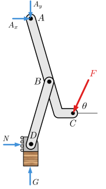
Included
Excluded
Lever \(ABC\text{,}\) Short Link \(BD\text{,}\) Wooden Block, Roller \(D\text{,}\)
Floor, Wall, Bearing \(A\)
Figure6.6.9.Free-body diagram 3
The load from the short link at \(B\) does not appear on this free-body diagram because it is internal. Internal loads connect two parts of the body together. They should not be included in the free-body diagram because they always occur in equal and opposite pairs which cancel each other out.
Tips.
Look for free-body diagrams that include only three unknowns in two dimensions or six unknowns in three.
Don’t include internal loads on your free-body diagrams.
Examine the wooden block.
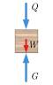
A free-body diagram of the block shows the clamping force Q, which we are seeking.
Note that \(Q \ne G\text{.}\) These forces are given different names since they may have different magnitudes. If the weight of the block is small 1
(less than about 0.1%)
in comparison to the other forces acting on the object it may be neglected, in which case \(Q = G\) and they could be given the same name.
Figure6.6.10.Free-body diagram 4 (block)
Tips.
If the two forces are not the same don’t identify them by the same name.
Make as few assumptions as you possibly can. Make a note of any assumptions you make.
In textbook problems, if the weight of an object is not mentioned it may be neglected.
Exclude the wooden block.
We can further simplify the diagram by removing the wooden block, leaving only the roller, short link and lever.
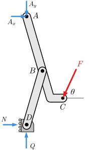
Included
Excluded
Lever \(ABC\text{,}\) Short Link \(BD\text{,}\) Roller \(D\)
Floor, Wall, Bearing \(A\text{,}\) Wooden Block
Figure6.6.11.Free-body diagram 5 (lever and link)
Examine the short link \(BD\).
The short link \(BD\) is a two-force body and as discussed in Subsection 3.3.3 can only be in equilibrium if the forces at \(B\) and \(D\) are equal-and-opposite and act along a line passing through these two points. This means that the 24:7 slope of the link determines the direction of force \(BD\text{.}\)
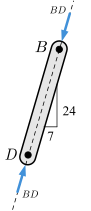
When drawing free-body diagrams, forces with known directions should be drawn pointing in that direction rather than breaking them into components, otherwise, you may lose track of the fact that the \(x\) and \(y\) components are not independent but are actually related by the direction of the force.
Figure6.6.12.Free-body diagram 6 (short link)
Here we have assumed that the forces acting on the link are compressive. If the equilibrium equations produce a positive value for \(BD\) our assumption is proved correct, while a negative result indicates that we were wrong and the link is actually in tension.
Tips.
A short-link is a two-force body.
Recognize two-force bodies because they give you information about direction.
Represent the force of a two-force body as a force with unknown magnitude acting along a known line of action, not as \(x\) and \(y\) components.
If you don’t know the sense of a force along its line of action, assume one. If you guess wrong, the analysis will give you a negative value.
Examine the roller at \(D\).
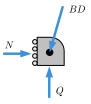
Note that the force \(BD\) acting on the roller is shown pointing down and to the left. This is equal and opposite to the force acting on the link at \(D\text{,}\) which points up and to the right. These two must act in opposite directions because they are an action-reaction pair.
Figure6.6.13.Free-body diagram 7 (roller)
The roller is a three-force body, so the lines of action of \(N\text{,}\)\(Q\text{,}\) and \(BD\) are coincident and it may be treated as a particle. Equilibrium analysis shows that \(N\) and \(Q\) must oppose the horizontal and vertical components of force \(BD\text{.}\)
The clamping force \(Q\) produced by the toggle clamp appears on this free-body diagram so it will be important later for the solution.
Tips.
Recognize three-force bodies and use their special properties to your advantage.
Use the same name for the exposed forces on interacting bodies since they are equal-and-opposite halves of an action-reaction pair.
Exclude the roller.
We can further simplify the free-body diagram by removing the roller. The roller and short link are connected with a pin but, for equilibrium, the forces acting on a short link (or any two-force body) must share the same line of action — the line connecting its endpoints; otherwise, components perpendicular to this line would produce an unbalanced moment about the other endpoint.
The previous free-body diagram has three unknowns and can be solved but the free-body diagram of the lever by itself is also correct, and this is the free-body diagram that most people begin with.
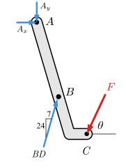
Included
Excluded
Lever \(ABC\)
Floor, Wall, Bearing \(A\text{,}\) Wooden Block, Roller \(D\text{,}\) Short Link \(BD\)
Figure6.6.15.Free-body diagram 9 (lever)
The load \(BD\) acting on the lever in this diagram has the same magnitude, direction, and line of action as the load acting on the short link at \(D\text{,}\) so this can be thought of as sliding a force along its line of action — an equivalent transformation.
The following loads are not shown here because they act between two objects that are not part of the body:
the loads between the bearing block and the wall \(W_x\text{,}\)\(W_y\text{,}\) and \(M\text{,}\)
the loads between the floor and the wall \(V_x\text{,}\)\(V_y\text{,}\) and \(M_v\text{,}\)
the load between the block and the floor \(G\text{,}\) and
the load between the roller and the wall \(N\text{.}\)
All of the free-body diagrams we have drawn are correct, though not all are necessary. Generally, we only draw the free-body diagrams needed for the solution. These diagrams form a chain that connects the known input forces to the desired output forces. When solving frames and machines, think carefully about what you know and what you need to solve for: that determines which free-body diagrams you will need. Taking a few moments to consider what unknowns you’d have at each step can help you optimize your problem-solving effort.
You should recognize that it is possible to draw incorrect free-body diagrams which produce correct results. Consider the diagram below.
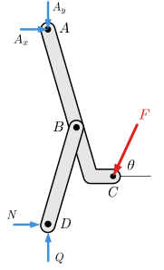
This diagram doesn’t accurately represent what is happening at pin \(D\text{.}\)
Forces \(N\) and \(Q\) do not actually act on the short link at \(D\text{.}\) Force \(N\) acts between the roller and the wall and clearly this diagram doesn’t include the roller. Similarly \(Q\) acts between the block and the roller. These forces don’t belong on the free-body diagram even though they are equal to the \(x\) and \(y\) components of force \(BD\text{.}\) Only forces that cross the imaginary boundary between the object and the rest of the world belong on the free-body diagram.
Students are inclined to argue that this free-body diagram is statically equivalent to Figure 6.6.11 and it produces the correct answer so it must be OK. It isn’t correct because it reflects a misunderstanding about what you are modeling and what you aren’t. Other engineers using your FBDs need to know what you are modeling. The FBD is the key to your analysis of the real world.
Example6.6.17.Toggle Clamp.
Knowing that angle \(\theta= 60°\text{,}\) find the vertical clamping force acting on the piece at \(D\) and the magnitude of the force exerted on member \(ABC\) at pin \(B\) in terms of force \(F\) applied to the clamp arm at \(C\text{.}\)
Answer.
\begin{gather*}
BD = 2.52 F \\
Q = 2.42 F
\end{gather*}
Solution.
For this problem, we need two free-body diagrams. The first links the input force \(F\) to the link force \(BD,\) and the second links \(BD\) to the clamping force \(Q\text{.}\)
(a)FBD I
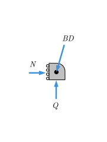(b)FBD II
Figure6.6.18.
We will assume the two-force member \(BD\) is in compression based on the physical situation. The forces acting on the link, lever and roller are all directed along a line of action defined by a 7-24-25 triangle. Similar triangles give
While you could certainly find \(A_x\text{,}\)\(A_y\) and \(N\) using other equilibrium equations they weren’t asked for and we don’t bother to find them.
Thinking Deeper6.6.19.Why does the Method of Joints work on trusses but not on Frames or Machines?
We can solve trusses using the methods of joints and method of sections because all members of a simple truss are two-force bodies. Cutting a truss member exposes an internal force that has an unknown scalar magnitude, but a known line of action. The force acts along the axis of the member and causes no bending if the member is straight. Cutting a truss member exposes one unknown.
Frames and machines are made of multi-force members and cutting these, in general, exposes:
A force with an unknown magnitude acting in an unknown direction, and
A bending moment at the plane of the cut.
Cutting a two-dimensional multi-force member exposes three unknowns, and six are exposed for a three-dimensional body. The number of unknowns quickly exceeds the available equations rendering the problem impossible to solve.
Bottom line: use the method of sections and joints only for trusses made of two-force straight members; for all other multi-force rigid body systems draw and analyze free-body diagrams of the components.